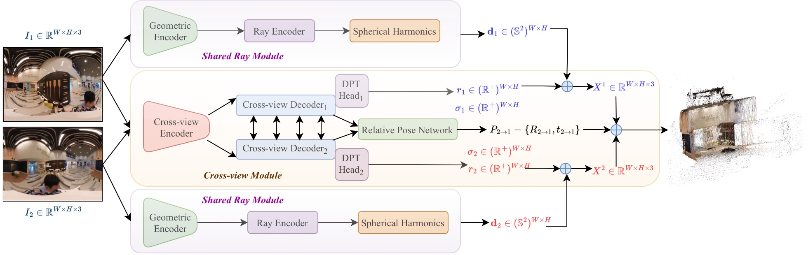
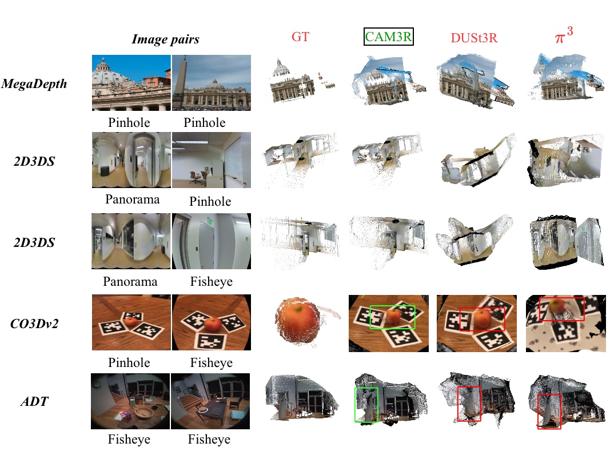
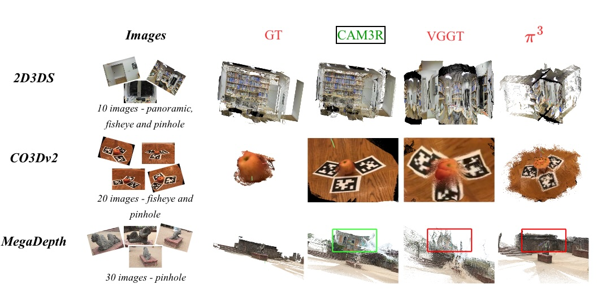
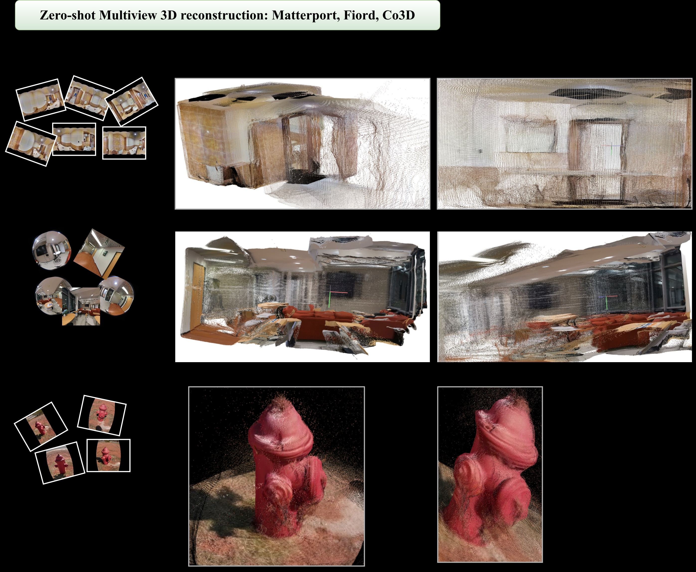
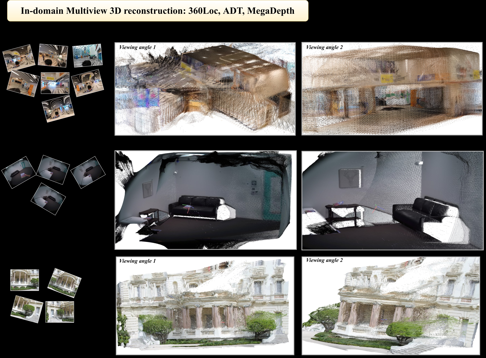
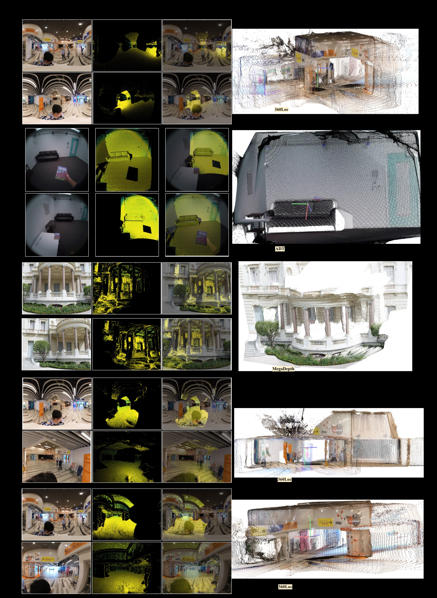

Abstract
Recovering dense 3D geometry from unposed images remains a foundational challenge in computer vision. Current state-of-the-art models are predominantly trained on perspective datasets, which implicitly constrains them to a standard pinhole camera geometry. As a result, these models suffer from significant geometric degradation when applied to wide-angle imagery captured via non-rectilinear optics, such as fisheye or panoramic sensors. To address this, we present CAM3R, a Camera-Agnostic, feed-forward Model for 3D Reconstruction capable of processing images from wide-angle camera models without prior calibration. Our framework consists of a two-view network which is bifurcated into a Ray Module (RM) to estimate per-pixel ray directions and a Cross-view Module (CVM) to infer radial distance with confidence maps, pointmaps, and relative poses. To unify these pairwise predictions into a consistent 3D scene, we introduce a Ray-Aware Global Alignment framework for pose refinement and scale optimization while strictly preserving the predicted local geometry. Extensive experiments on various camera model datasets, including panorama, fisheye and pinhole imagery, demonstrate that CAM3R establishes a new state-of-the-art in pose estimation and reconstruction.
Overview

Evaluation
Two-view Reconstruction
| Model | 2D3DS | MegaDepth | CO3Dv2 | 360Loc | ADT | |||||
|---|---|---|---|---|---|---|---|---|---|---|
| RRA | RTA | RRA | RTA | RRA | RTA | RRA | RTA | RRA | RTA | |
| DUSt3R | 10.6 | 6.0 | 95.6 | 80.8 | 94.7 | 43.1 | 0.0 | 0.0 | 91.0 | 63.6 |
| MASt3R | 18.3 | 9.3 | 69.7 | 56.4 | 98.4 | 33.4 | 39.8 | 5.3 | 96.6 | 63.5 |
| Pow3R | 7.5 | 6.0 | 96.2 | 74.2 | 95.8 | 38.3 | 0.0 | 0.0 | 96.6 | 79.2 |
| VGGT | 11.8 | 11.0 | 98.0 | 88.2 | 90.9 | 29.4 | 37.8 | 11.1 | 92.7 | 82.9 |
| π³ | 16.8 | 11.4 | 99.8 | 93.3 | 90.7 | 22.7 | 38.5 | 13.0 | 97.5 | 93.8 |
| CAM3R | 97.7 | 94.3 | 96.8 | 94.2 | 97.5 | 88.2 | 96.0 | 91.0 | 99.0 | 95.0 |

Multi-view Reconstruction

| Model | 2D3DS | MegaDepth | 360Loc | ||||||
|---|---|---|---|---|---|---|---|---|---|
| RRA | RTA | mAA | RRA | RTA | mAA | RRA | RTA | mAA | |
| VGGT | 31.8 | 34.4 | 7.6 | 100 | 97.4 | 68.8 | 47.9 | 50.8 | 19.5 |
| π³ | 40.0 | 35.8 | 9.6 | 100 | 98.4 | 73.4 | 48.6 | 47.4 | 17.8 |
| CAM3R | 94.0 | 91.5 | 73.5 | 96.6 | 96.3 | 87.4 | 98.7 | 91.2 | 82.6 |
Additional Visualizations



Acknowledgements
We thank Anand Bhattad for helpful discussions and valuable feedback. This research is based upon work supported by the Office of the Director of National Intelligence (ODNI), Intelligence Advanced Research Projects Activity (IARPA), via IARPA R&D Contract No. 140D0423C0076. The views and conclusions contained herein are those of the authors and should not be interpreted as necessarily representing the official policies or endorsements, either expressed or implied, of the ODNI, IARPA, or the U.S. Government. The U.S. Government is authorized to reproduce and distribute reprints for Governmental purposes notwithstanding any copyright annotation thereon.